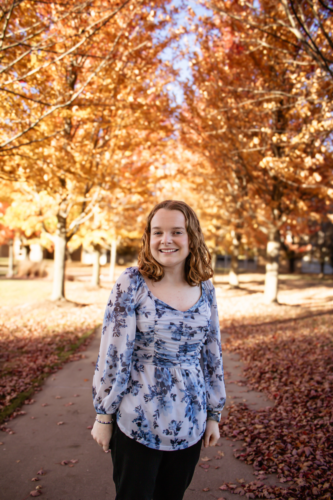

About Me
A storyteller
with a camera.
Hello, I am Kirsten Harrington. I am a senior at Concordia University Wisconsin, majoring in photography with a minor in mass communications. Through my photography, I focus on capturing the emotion of the moment in time. I fell in love with photography during COVID, and I got my first camera a couple of years later. I love capturing emotion, whether it is someone laughing or a sunrise on the lake; I want the audience to feel something.
Kirsten Harrington
Let’s Work Together